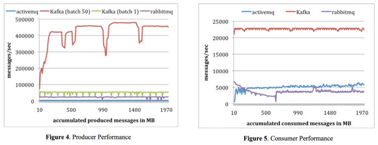

# Apache Kafka
# 목차
- Kafka가 무엇인가요?
# Kafka가 무엇인가요? (1)
- Apache Kafka® is a distributed streaming platform (opens new window)
- 말 그대로
분산 스트리밍 플랫폼, LinkedIn 에서 구직 + 채용 정보들을 한곳에서 처리(발행/구독)할수 있는 플랫폼으로 개발이 시작 - 분산된 형태로 돌아가는
publish-subscribe 방식메시지 교환 시스템Publish: 데이터를 생성, Subscribe: 해당 데이터를 읽어 소비
- 메시지를 기본적으로 메모리에 저장하는 기존 메시징 시스템과는 달리 메시지를 파일 시스템에 저장
카프카 재시작으로 인한 메세지 유실 우려 감소
# Kafka가 무엇인가요? (2)
기본 개념
- 여러 데이터센터로 확장할 수 있는 하나 혹은 그 이상의 서버에서 클러스터로 실행(수행/운영)된다
- 카프카 클러스터는 레코드(records)라는 스트림을 토픽(topics)이라고 불리는 카테고리에 저장
- 각각의 레코드는 키(a key,), 값(a value), 타임스탬프(a timestamp)로 구성
분산된 형태로 동작하는 changelog
- Key 값에 할당된 Value 값들에 대한 변경 내역을 분산된 형태로 저장한다
- 저장된 Key-Value 들을 분배한다.
